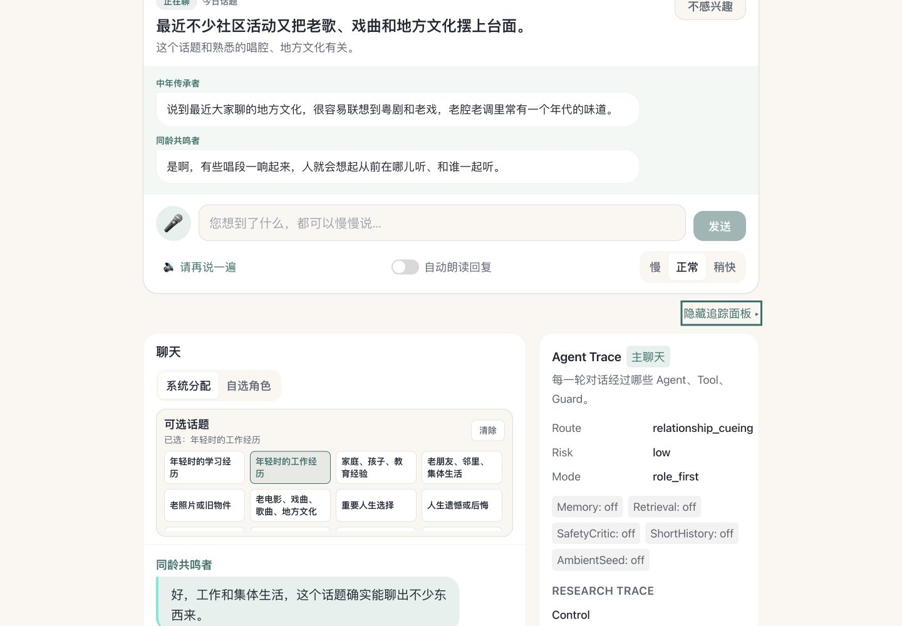

CityU MSDS · SDSC6002 Research Project · Summer 2026
Relationship-Aware Orchestration
for Older-Adult Reminiscence
A user-named, relationship-first voice companion that helps older adults feel heard, remembered, safe, and in control—without replacing family, caregivers, or clinicians.
City University of Hong Kong × Shenzhen MSU-BIT University
Scope &Contribution
01 · Interaction gapDirect single-agent questions can feel interview-like; uncoordinated personas can become noisy, inauthentic, or intrusive.
02 · Prototype contributionA deterministic scheduler selects up to three visible relationship roles, sequences their cue, and records who speaks, waits, summarizes, or stops.
03 · Evaluation contributionA C1/C2/C3 protocol separates direct questioning, fixed cueing, and dynamic relationship-aware cueing across four evidence layers.
1Why a Single Voice Is Not Enough
Reminiscence needs an invitation, not an interrogation. A small social scene may make it easier to join a memory conversation—if the system also knows when to stay silent and stop.
Design gap
A single companion asking direct questions can create entry pressure. Multiple voices without coordination risk becoming noisy, fake, chaotic, or boundary-crossing.
| Approach | What it offers | Unresolved interaction issue |
|---|---|---|
| Single companion | Clear, efficient dialogue | One relational stance; direct-question pressure |
| Fixed multi-role scene | Social variety and cueing | Roles do not adapt to topic or boundary |
| This prototype | Topic-aware role scheduling | Must remain explainable, restrained, and user-controlled |
2Research Questions
How can a relationship-aware multi-agent system use dynamic role orchestration and brief social cues to invite older adults into reminiscence more naturally?
- RQ1 · Relationship orchestration: Which roles should speak, wait, follow up, summarize, or stop for a given topic and preference?
- RQ2 · Social cueing: Does a short role-to-role cue feel more natural and lower-pressure than a direct question?
- RQ3 · Role interaction: How can differentiated roles cooperate without noise, inauthenticity, overload, or boundary violations?
What the prototype must demonstrate
Natural entryThe elder joins an ongoing cue instead of answering a cold prompt.
Explainable turn-takingSelected, silent, and stopped roles are visible in trace.
User controlRoles, topics, memory, and follow-up can be rejected or paused.
Boundary safetySensitive content redirects rather than intensifies the scene.
3Three Mechanisms, One Boundary
Well-being over stickinessThe system may end, defer, or remain silent.
Roles, not peopleNo persona claims a real age, history, kinship, or lived experience.
Boundary as ethicsNo diagnosis, dosage advice, deceased impersonation, or real emergency action.
Core system contribution
Role taxonomyEight visible options: seven relationship functions plus “No Relationship Role.”
Deterministic schedulingTopic, preference, turn intent, and risk select a focused cast of at most three roles.
Traceable evaluationRole/topic/boundary decisions are exposed for scenario audit and future C1/C2/C3 study.
Per-turn logic
Read the sceneTopic · life experience · role preference · boundary signal
→
Arrange the castSelect · order · follow up · summarize · stay silent
→
Yield the floorBrief cue · gentle invitation · user control · natural stop
4Relationship-Aware Orchestration
Implemented deterministic policyVisible roles are personas, not autonomous agents
Text / Voice Inputtopic card · ASR · free text
User Contextpreferences · consented memory
→
InputRuleGuard → CoordinatorAgentroute · risk · bounded tool policy
Relationship schedulerclassify topic · select roles · cue style
→
Role Cue & Invitationrespond · follow up · summarize · stop
OutputRuleGuard & Traceroles · route · memory · boundary
Boundary Guardian role
GuardianAgent
SafetyCriticAgent
User controls
Five-stage cue sequence
ClassifyTopic and sensitivity.
SelectOne to three useful roles.
StageA brief role-to-role cue.
InviteOne gentle opening.
YieldFollow up once, summarize, or stop.
5Agents, Visible Roles & Supporting Services
| Autonomous agent | Primary decision | Visible evidence |
|---|---|---|
| CoordinatorAgent | Route, policy, and bounded tool selection | Route · agents · tools · guards |
| CompanionAgent | Warm response using profile and short history | Mode · memory · history use |
| GuardianAgent | Check in, defer, stay silent, or escalate safely | StateEvent · reason · cooldown |
| SafetyCriticAgent | Review only when risk or uncertainty is high | Risk level · safe rewrite |
Eight visible relationship-role options
Same-Age PeerEra resonance without false lived experience
Curious JuniorOne light, specific follow-up
Middle-Age BridgeReceives and carries experience forward
Elder MentorLow-judgment reflection
Theme CompanionInterest and culture bridge
Memory OrganizerFaithful summary with consent
Boundary GuardianPause, redirect, or decline
No Relationship RoleDirect user-named companion response
Core user-facing capabilities
Chat & Voicemulti-turn text · ASR/TTS
Naming & Settingsuser-named AI · preferences
Memory Centerapprove · edit · delete · pause
Remindersdate · time · frequency
Proactive CareStateEvent · cooldown · quiet hours
Retrieval & Tracecurrent facts · inspectable decisions
6Implemented Prototype Evidence

Auditable castingRole selection uses rules and templates, not hidden independent LLM agents.
Inspectable state
relationship_cueing, risk, role-first mode, memory, and retrieval state are visible.Controlled exitsUser opt-out, sensitive-topic restraint, and “No Relationship Role” paths are covered.
Topic-card openingInitial non-sensitive turn may stage two roles.
Focused follow-upLater turns select the smallest useful speaking set.
User opt-out“No Relationship Role” returns to the named companion.
Sensitive topicBoundary Guardian leads; probing roles stay silent.
Controlled memorySummaries are offered, never silently committed.
No retrieval for reminiscenceExternal lookup remains off for emotional memory talk.
7Evaluation Protocol & Current Evidence
C1 · DirectOne companion asks a direct reminiscence question.
→
C2 · FixedA fixed role or fixed two-role prelude.
→
C3 · DynamicTopic-aware selection of two to three roles and a brief cue.
| Evidence layer | Primary measures | Answers |
|---|---|---|
| Content | Recall onset; concrete details; comparison; meaning | Does cueing enrich self-expression? |
| Experience | Entry pressure; naturalness; social presence; noise/fakeness | Does C3 feel easier and more respectful? |
| Behavior | Speaking time; elaboration; pauses; refusals; control actions | How does the user actually respond? |
| Boundary | Discomfort; privacy; grief; “do not mention again” | Does the system stop appropriately? |
Evidence status — outcomes are not yet claimed
382 / 382Backend tests pass locally, including relationship orchestration, cueing, memory, reminders, sensor adaptation, controlled retrieval, voice-provider selection, trace privacy, and safety regression. Tests are offline and do not call paid APIs.
Implemented. Deterministic topic classification, role selection, cue templates, user opt-out, and role/topic/boundary trace.
Prepared. Study 1 co-design materials and Study 2 C1/C2/C3 instruments are ready for piloting.
Not yet established. No completed ethics-approved 65+ participant study; naturalness and pressure effects remain hypotheses to test.
Analysis plan
Study 1Qualitative interviews and co-design refine role tone, materials, and sensitive-topic handling.
Study 2Counterbalanced C1/C2/C3 comparison over matched reminiscence materials.
Trace auditCheck role fit, silence, handoff, boundary decision, memory, and retrieval state.
TriangulationConnect self-report, content coding, observable behavior, and trace evidence.
8Ethics, Limitations & Next Steps
No impersonationRoles never claim real kinship, lived history, or the identity of a deceased person.
Memory controlOnly approved summaries are retained; users can view, edit, delete, pause, or refuse memory.
Non-clinical boundaryNo diagnosis, dosage change, real emergency dispatch, or caregiver notification.
Honest prototype boundary
Deterministic cueingCurrent role selection and visible role messages use auditable rules/templates, not independent LLM agents.
Research stageCurrent evidence is software and role-play/convenience pilot evidence, not older-adult outcome evidence.
Demo infrastructureSensors are simulated; providers are configurable; offline fake/mock paths remain available.
Non-autonomous rolesThe eight relationship roles are visible personas scheduled through the companion layer.
Next research step
Refine with older adultsValidate role labels, tone, cue length, and acceptable topic-role pairings.
Compare mechanismsTest C1/C2/C3 rather than comparing a whole product against no system.
Study restraintMeasure silence, refusal, handoff, and stopping as designed behaviors—not failures.
Extend carefullyMove toward semi-automatic generation only after the deterministic trace and boundary policy remain stable.
The goal is not more conversation. It is the right role, at the right moment, with a clear way for the older adult to pause, redirect, or stop.